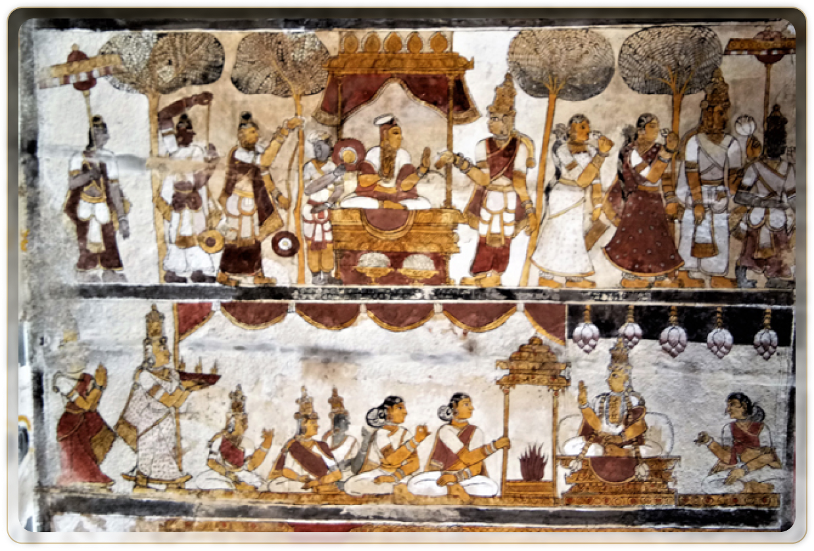
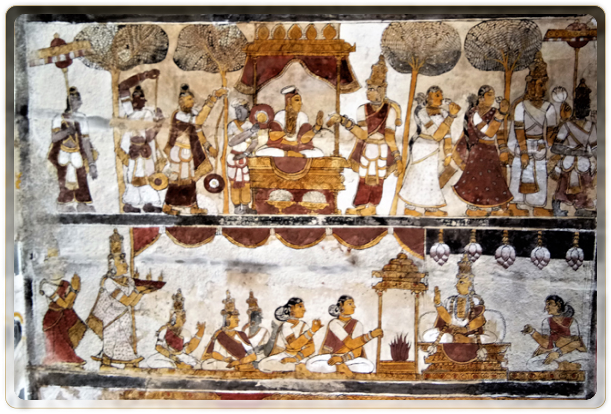

.png)
The soil of Uttar Pradesh is seeped in rich ancient history that has been witness to our democratic traditions long before the subcontinent claimed Independence from the British.


Ancient India was no stranger to Democracy. The concept of
democracy was not only common but prevalent in large sections
of society, for example in local governments, trade unions,
religious assemblies, etc. Elaborate procedures for elections
existed as far ago as the Vedic times.
The parliamentary
form of governance we see today in India as well as the west
has been prevalent in the Indian subcontinent long before the
British arrived. Mentions of Sabhas and Samitis can be traced
back to Vedic Literature as well as the likes of Dharma Sabhas
of the Buddhists within India. Up until the 16th century, this
kind of governance expanded to different parts of the
subcontinent before the land was subjected to different
invasions.


 These sabhas and samitis were a forum to have open debates, where everyone was free to speak their mind
on the matters being debated. Deliberations of every kind with regard to policy, governance, or public
redressal among many others were
done within these Sabhas.
Their function was
to assist the Sabhapati run the state smoothly.
The final resolution was only passed when all the members were in agreement over the resolution. The
public was free to seek redressal and come to the sabha with their grievances should they not be
satisfied with their local redressal systems, which would then be discussed in the Sabha and addressed.
These sabhas and samitis were a forum to have open debates, where everyone was free to speak their mind
on the matters being debated. Deliberations of every kind with regard to policy, governance, or public
redressal among many others were
done within these Sabhas.
Their function was
to assist the Sabhapati run the state smoothly.
The final resolution was only passed when all the members were in agreement over the resolution. The
public was free to seek redressal and come to the sabha with their grievances should they not be
satisfied with their local redressal systems, which would then be discussed in the Sabha and addressed.


An understanding of the gradual progression from the downfall of the Mughal Empire to the British East India Company taking the reigns of the Awadh region culminating in the set up of a Legislature for British-held India.


In 1773, the then Mughal Emperor legally transferred the regions of Ghazipur and Banaras that were under his jurisdiction to the Company. The Company then gradually started to widen its reach within the UP region. All the territories that subsequently came under the company had as their legislature the Governor General’s Council in Calcutta who could issue rules and ordinances as long as they were in line with the UK law. Over time they made Agra their headquarters for their North Western Indian territories.